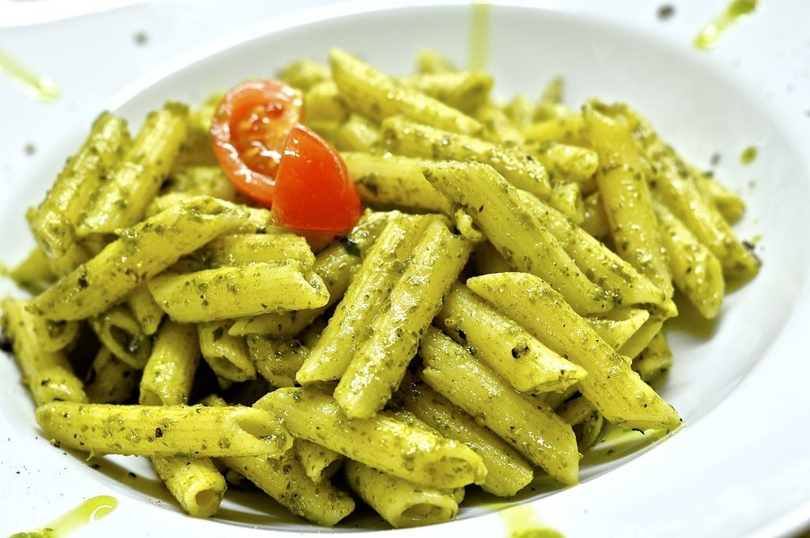

Penne Pasta Recipe

Description
Tiny, white button mushrooms make a delicious, simple sauce for pasta. Try them with penne or large shells.
Ingredients
- 1 (8 ounce) package dry penne pasta
- ¼ cup olive oil
- 1 clove garlic, finely chopped
- 1 pound button mushrooms, sliced
- salt and freshly ground black pepper to taste
- 1 tablespoon butter
- 1 ½ teaspoons chopped fresh parsley
- ¼ cup grated Parmesan cheese
Steps
- Bring a large pot of lightly salted water to a boil. Place the penne pasta in the pot, cook for 8 to 10 minutes, until al dente, and drain.
-
Heat the oil in a large skillet over medium heat, and cook the garlic and mushrooms until mushrooms are tender. Season with salt and pepper,
and mix in the butter.
- In a large bowl, toss the cooked pasta and the mushroom mixture. Sprinkle with Parmesan cheese and garnish with parsley to serve.
Home